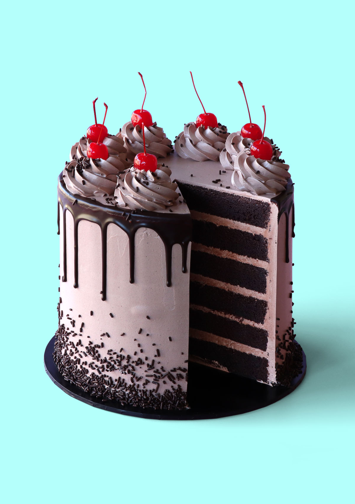

Chocolate Cake

Description
Looking for a one bowl chocolate cake recipe? Here it is! Moist, fudgey and easy to stack and serve.
My chocolate cake recipe is the most decadent chocolate cake you’ll ever have.
And it’s so simply to make! Just a note, this recipe doesn’t use oil because it has a higher amount of butter than my vanilla cake recipe.
If you’re looking for a butter free chocolate cake recipe, check out my vegan chocolate recipe! It’s just as amazing.
I’d go as far as saying it’s even better!
Ingredients
- 2 cups all-purpose flour
- 2 1/4 cups granulated sugar
- 1/2 cup cocoa powder
- 1 tsp bicarbonate of soda
- 1 tsp fine salt
- 1 1/2 cups unsalted butter
- 4 large eggs
- 1 1/2 cups whole milk
Steps
- Please note: To make the 6 layered cake you see pictured; you’llneed to double the cake recipe only. All other measurements areenough to fill, crumb coat and finish decorating the cake.
- Preheat a fan-forced oven to 140°C / 275°F or a conventional oven to 160°C / 320°F. Spray three 20 cm (8 inch) cake tins with oilspray and line the bottoms with baking paper. Set aside.
- Add the flour, sugar, cocoa powder, bicarbonate of soda and salt to alarge mixing bowl and mix with a hand mixer until well combined.
- Next, add the softened butter and mix on low speed until the batterreaches a crumbly, sand-like texture. Next, add the softened butter and mix on low speed until the batterreaches a crumbly, sand-like texture.
- Add the eggs and milk and mix again on low speed until all the dry ingredients are incorporated. Scrape down the side of the bowl andmix for another 20 seconds. It’s at this point that you can add anyadditional flavourings or food-gel colourings to the batter.
- Divide the cake mixture between the three tins. I find that using an ice-cream scoop makes it easy to distribute the batter evenly, ensuring that all three cakes will bake at the same rate.
- Bake for 50–60 minutes, or until a toothpick inserted in the middleof the cake comes out clean. If the toothpick is coated with wet batter, continue baking, for 10 minutes at a time until fully baked.
- Allow the cakes to cool to room temperature in the tins, then chill them in the fridge overnight. Chilling your cakes overnight makes them easier to trim and decorate, so I always bake my cakes the day before I decorate them.
- To trim your chilled cakes, use a cake leveller or large serrated knife to carefully trim the crust off the top of each cake. Then trim eachcake in half. You’ll end up with 6 layers.
- To crumb coat your cake, add a dab of frosting onto a 10” cakeboard or flat serving plate. Use a small offset spatula to spread thefrosting around before adding the first cake layer. Gently press downthe centre of the cake layer to make sure it’s stuck to thefrosting underneath.
- Add frosting to a piping bag and frost a ring around the top of thecake. Fill the centre with more frosting. Use your small offsetspatula to smoothen out the frosting before you add the next layer ofcake. Repeat with the remaining layers.
- Add more frosting around the sides and top of the cake. Use the smallspatula to smoothen out the top and sides of the cake, taking care tofill in any gaps in between each layer of cake.
- Use a cake scraper (otherwise known as a bench scraper) to smoothenout the frosting on the sides and top. Get it as neat as you can.This should just be a neat, thin layer of frosting which is aimed attrapping any cake crumbs so that random bits of cake crumbs don’t show up on the final layer of frosting. Chill for 2 hours orovernight.
- Your cake is now crumb coated and ready to be decorated any way you like!